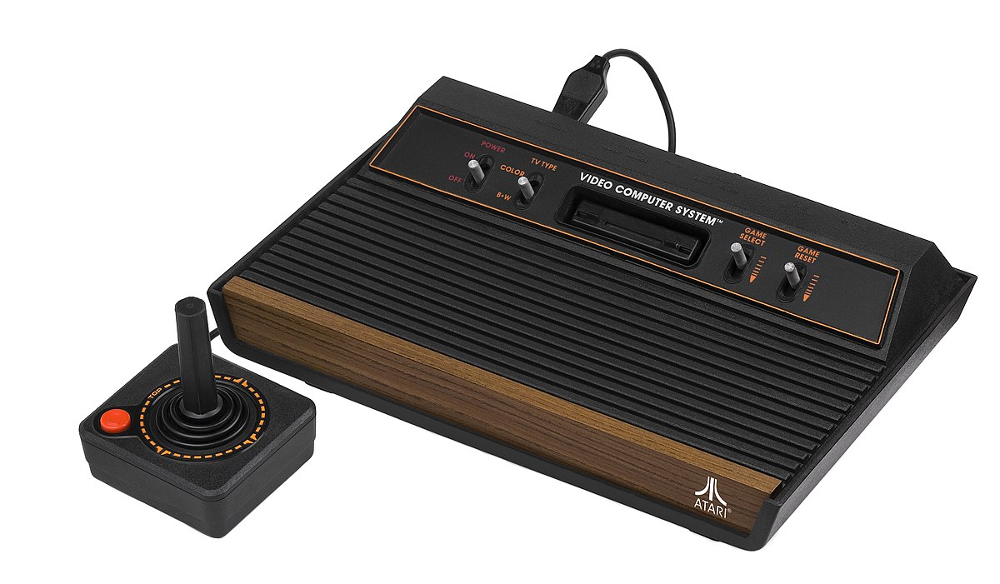

Como futuro ingeniero, me fascina cómo ha avanzado el hardware de las consolas, pasando de circuitos muy simples a máquinas con una potencia increíble.
Todo empezó con máquinas como la Magnavox Odyssey o la Atari 2600. Eran gráficos de 8 bits y sonidos muy básicos.

Con la llegada de la primera PlayStation y la Nintendo 64, el mundo pasó de las 2D a las 3D. Fue un salto técnico enorme.
Hoy en día, con la PS5 y la Xbox Series, hablamos de trazado de rayos y discos SSD. Es impresionante la arquitectura actual.